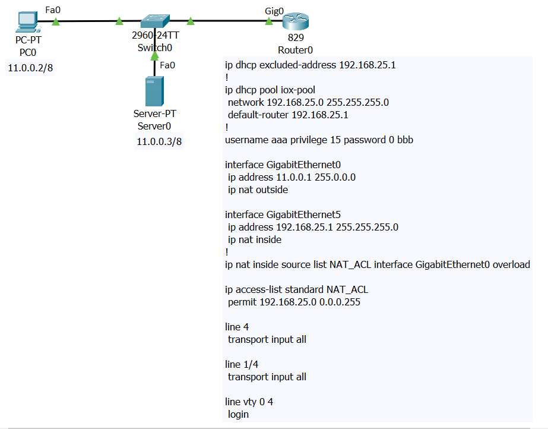

Cisco IOx Guest OS
In order to gain access into Cisco IOx Guest OS in Router 829, apply the following configurations in command line:
IR800>en
IR800#conf t
IR800(config)#interface GigabitEthernet5
IR800(config-if)# ip address 192.168.25.1 255.255.255.0
IR800(config-if)# no shut
IR800(config)#line 1/4
IR800(config-line)# transport input all
IR800(config-line)#end
Now users can telnet into the guest OS via the GigabitEthernet5 interface of the 829 with the port 2070.
Trying 192.168.25.1 ...Open
root@>
IOx available commands:

IOxClient
IOxClient is a command line tool provided as part of Cisco IOx SDK. This utility is primarily meant for assisting application development for Cisco's IOx platforms. When ioxclient is used for the first time, users will go through a setup wizard that helps the ioxclient to configure itself.

Packet Tracer supports a subset of the available ioxclient commands as listed below.
- ioxclient
- ioxclient application activate [app id]
- ioxclient application deactivate [app id]
- ioxclient application install [app id][file name]
- ioxclient application list
- ioxclient application start [app id]
- ioxclient application stop [app id]
- ioxclient application uninstall [app id]
- ioxclient cartridge install [cartridge name]
- ioxclient cartridge list
- ioxclient cartridge uninstall [cartridge name]
- ioxclient package [package name]
Scripting Utility
JavaScript Utility

Python Utility

Access Point CLI
From the 829 IOS, users can telnet into the Access Point CLI via the GigabitEthernet5 interface of the 829 with the port 2004. IR800#telnet 192.168.25.1 2004Trying 192.168.25.1 ...Open
ap>
Access Point CLI available commands:

To terminate the telnet session, apply Ctrl-Shift-6 and then hit x
IOx application development and deployment
Packet Tracer provides users with an IOx IDE (GUI Integration Development Environment) which is an interface to build and manage IOx applications. Users can access the IDE on a PT-PC. In order to create and run an IOx application on the Router 829, users can follow the below guides.
- Create a topology(Router 829 with GLC-T module installed) and configure the devices as shown
- From the PC, go to Desktop -> IOx IDE -> Project -> New: Use helloworld for project name and select the 829 option. Go to Build -> Build Project to compile the project. This will create a helloworld directory in C:\
- From the PC, go to Desktop -> Command Prompt: run ioxclient command (aaa/bbb for username/password and 11.0.0.1 for IOx platform's IP address). Ftp from the PC to the server(cisco/cisco for username/password) and download ir800_yocto-1.7.2.tar and ir800_yocto-1.7.2_python-2.7.3.tar.
- On Router 829, telnet 192.168.25.1 2070 then run ioxclient command (aaa/bbb for username/password). Run ipconfig for ethernet1 ip address.
- Go back to the Router 829 IOS using the key combo Ctrl+Shift+6 x. Configure nat on the router: ip nat inside source static tcp [ethernet1 ip address] 8443 11.0.0.1 8443
- From PC Command Prompt, in C:\, run these commands ioxclient cartridge install ir800_yocto-1.7.2.tar and ioxclient cartridge install ir800_yocto-1.7.2_python-2.7.3.tar
- Cd to helloworld directory and run this command ioxclient application install hello1 helloworld.tar
- On Router 829, telnet 192.168.25.1 2070 then run the commands ioxclient application activate hello1 and ioxclient application start hello1 to run the app.
